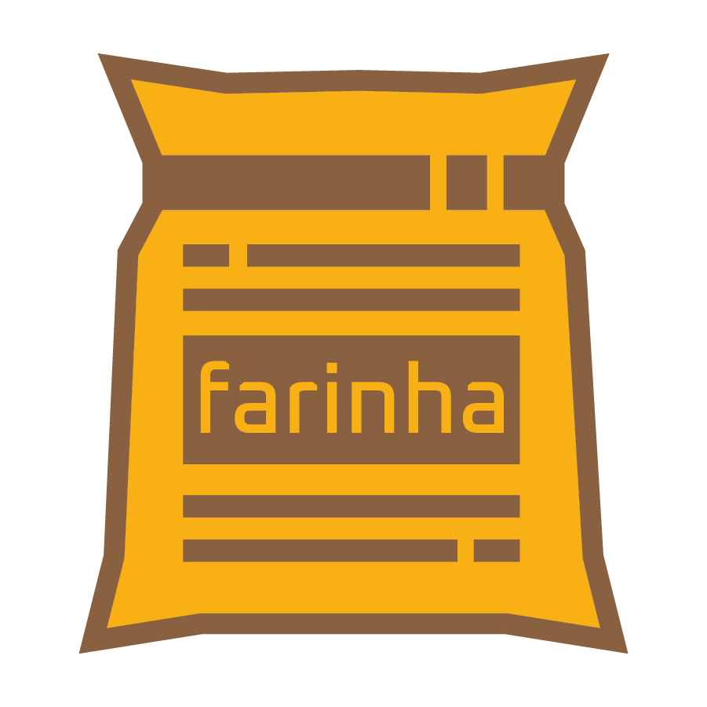
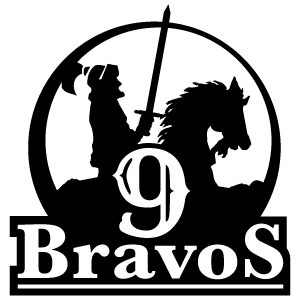

Farinha — implementare, instruire și suport
Instalarea și configurarea Farinha în infrastructura instituției, instruirea echipelor pentru utilizarea sistemului și suport continuu pe tot parcursul ciclului de viață al platformei.
Tehnologie & Informație
Soluții specializate în arhivistică și tehnologie aplicată colecțiilor documentare, pentru entități care valorizează memoria, rigoarea tehnică și accesul efectiv.

Software liber pentru instituții cu arhive permanente și memoriale.
Dezvoltat pentru a facilita gestionarea și accesul la colecții culturale, științifice și istorice cu precizie tehnică, permițând instituțiilor și altor entități să păstreze și să împărtășească patrimoniul lor documentar într-un mod accesibil și robust.
Dezvoltat cu Python, Django, Docker, SQLite și Bulma. Echipă de dezvoltare cu sediul în Salvador, Bahia, Brazilia.
farinha.info →Yndexa Tecnologia e Informação activează la intersecția dintre arhivistică și tehnologiile care permit scalarea acestei munci cu rigoare și inteligență.
Credem că instrumentele libere bune întăresc instituțiile, democratizează accesul la informație și păstrează memoria colectivă.
Instalarea și configurarea Farinha în infrastructura instituției, instruirea echipelor pentru utilizarea sistemului și suport continuu pe tot parcursul ciclului de viață al platformei.
Sprijin pentru implementarea și modernizarea arhivelor permanente — fonduri și colecții — cu orientare tehnică pentru organizarea și descrierea documentației fizice și digitale conform standardelor arhivistice (NOBRADE, ISAD-G), și implementarea platformelor tehnologice de acces și diseminare, bazate pe software-ul liber Farinha și resurse de inteligență artificială.
De-a lungul traiectoriei sale, Yndexa a operat alte mărci — astăzi închise — care exprimă aceeași vocație de a forma, publica și organiza.

Editură cu catalog divers, reunind science fiction și fantasy alături de lucrări tehnice din domeniul arhivisticii — o combinație care reflectă identitatea Yndexa: rigoare și imaginație.
Platformă de educație la distanță specializată în formare tehnică în domeniul arhivistic. A oferit cursuri de Asistent de Arhivă și Arhivă Medicală, pregătind profesioniști pentru piața de gestionare a documentelor.
Portal de referință pentru studenți și profesioniști în arhivistică din Brazilia. Reunea cărți, cursuri universitare, lucrările unor evenimente, calendar și resurse din domeniu — un punct de convergență pentru comunitatea arhivistică națională.
Contactați-ne pentru a programa o conversație inițială fără angajament. Analizăm contextul dvs. și prezentăm un diagnostic obiectiv.